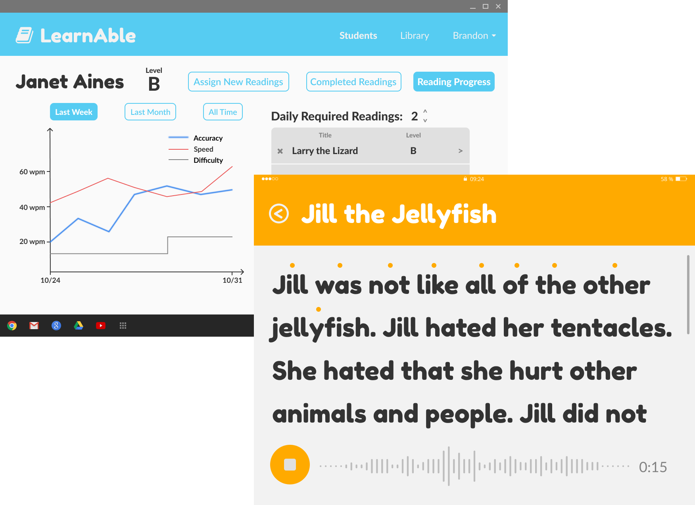

Personalized learning for students with dyslexia

Dyslexia is the most common language-based learning disability,
affecting between 5 to 17 percent of children in the United
States. Children with dyslexia usually have difficulties learning in
the classroom, so many students with dyslexia attend special education
or receive one-on-one tutoring in order to receive instruction that is
specifically targeted towards them. With effective intervention during
the early stages of literacy, the gap between dyslexic and
non-dyslexic students can be minimized. However, this intervention is
usually not effective, because teachers for students with dyslexia
have trouble personalizing instruction for each individual student.
Our solution
LearnAble is a reading management system to support personalized
reading instruction for students with dyslexia. It has a library of
reading passages, categorized by their level of difficulty with
regards to vocabulary and grammar. Teachers can easily assign passages
at the appropriate difficulty level for their students on their
interface. To determine an individual student's reading level, a
student can record themselves reading their assigned passage out loud,
and LearnAble notes which words the student struggled with and finds
patterns between those words. The teacher can use this data to gain a
deeper insight into their student's reading level, and structure their
instruction accordingly.